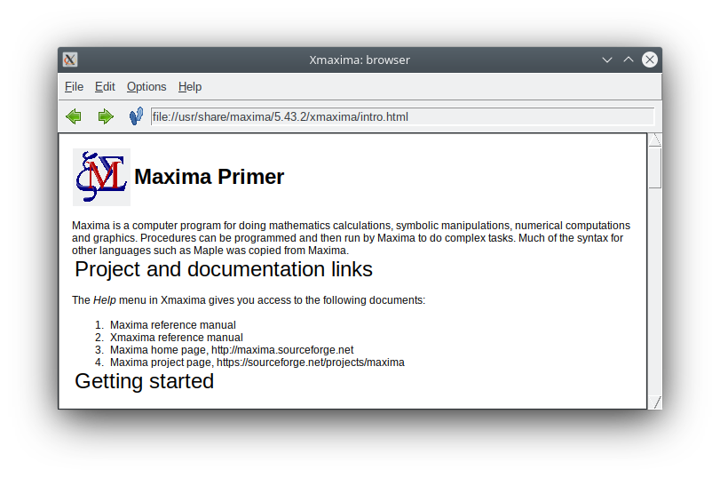
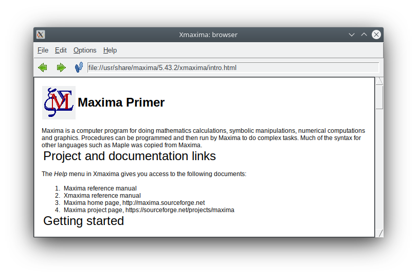

| [ << ] | [ < ] | [ Up ] | [ > ] | [ >> ] | [Top] | [Contents] | [Index] | [ ? ] |
2 Xmaxima Window
By default, Xmaxima creates two windows, a command window, where all the commands for Maxima will be entered and the output returned by Maxima will be printed.
The second window is Xmaxima’s browser; it is used to show a quick primer, a copy of the Maxima manual and any other HTML you might want to download from the Web.
 

The cursor is the small vertical bar that blinks in the text window. The text that is currently being written in the text window and which could be submitted to Maxima for evaluation is rendered in green. The text sent back by Maxima is rendered in black, and the text that has been previously entered by the user and that was already evaluated by Maxima is rendered in blue.
You can also choose different types and sizes for the fonts, in the
section ‘Preferences’ of the Options menu; those settings
will be saved for future sessions.